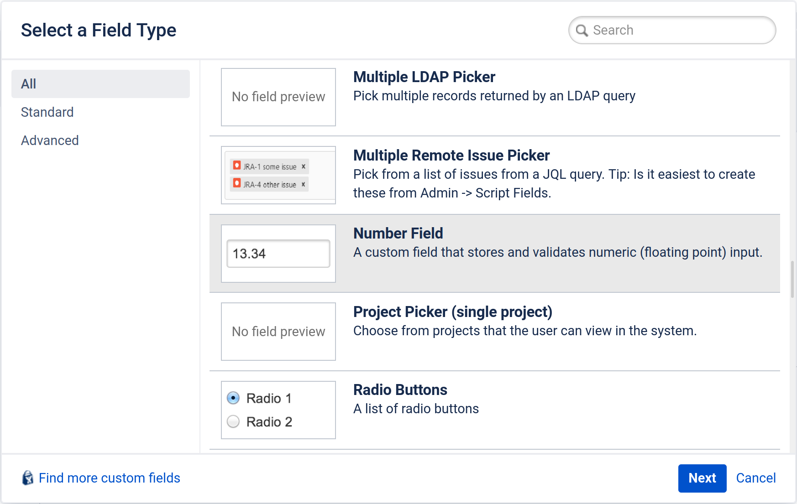
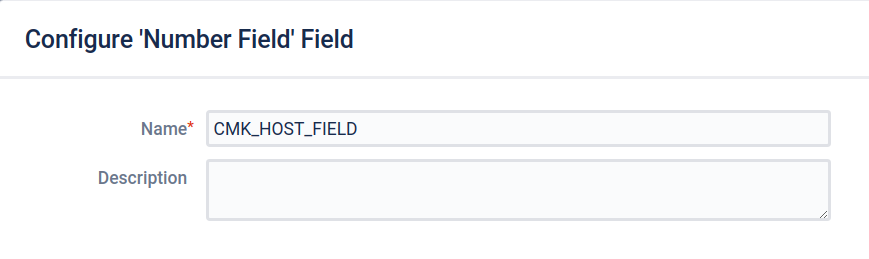

If you use the Jira software for project management, software development or for tracking bugs, with the commercial editions you can send notifications from Checkmk to Jira and create Issues there.
This works for the Jira applications Jira Core, Jira Software and Jira Service Desk.
If you use the Jira software for project management, software development or for tracking bugs, with the commercial editions you can send notifications from Checkmk to Jira and create Issues there.
This works for the Jira applications Jira Core, Jira Software and Jira Service Desk.
The following options are supported:
Create issues for host and service problems.
Create issues with a defined Priority.
Create issues with a defined Label.
Set links to host/services in Checkmk from the generated Jira issues.
Set a Resolution in the issue when OK conditions occur.
To set up the link from Checkmk to Jira, first create some new Fields in Jira and identify specific Jira IDs. Then configure the notification method for Jira in Checkmk.
1. Configuring Jira
When interacting with Jira, Checkmk needs to know which notifications have already created an issue and which have not. To make this possible, you need to create two so-called Custom fields in Jira — one for notifications on host issues, and one for service issues.
In order to be able to correctly identify host and service issues, the IDs of these issues must be unique. This is the case if your Jira instance receives notifications from only a single Checkmk site, as the monitoring core of a Checkmk site ensures uniqueness. Now, in distributed monitoring, multiple Checkmk sites may send notifications if decentralized notifications has been configured. If your Jira instance receives notifications from multiple Checkmk sites, any uniqueness is most likely over — at the very latest when the ID from a host issue has already been used by another Checkmk site. In such a configuration you need another user-defined field for the Checkmk site with which a unique assignment again becomes possible.
For the configuration in Checkmk you need the Jira IDs of the user-defined fields you created — and additionally those of some other fields, so all together the following are required:
Project ID
Issue type ID
Priority ID (optional)
Host custom field ID
Service custom field ID
Site custom field ID (optional)
(Workflow) Transition ID (optional)
The vast majority of these IDs can be read using the script below via one of Jira’s REST APIs. Jira administrators can also retrieve the IDs via Jira’s GUI — even those IDs that cannot be retrieved via the API and thus the script.
1.1. Setting up the user-defined fields in Jira
Creating a field for host problems
-
As the Jira administrator, open the Administration item in the header bar:

Now select Issues and navigate in the Fields section to Custom Fields. Via Add custom field — this button may be hidden in the upper third of the right screen border depending on the Jira product — you can create a new custom field.
-
In the next window, select All so that all field types are displayed.
 -
Click the field type Number Field and then Next:
 For example, enter
CMK_HOST_FIELDas the Name. You can also optionally enter a description of the new field in the Description. Confirm the whole thing by clicking on Create.
Creating a field for service problems
Since you also need such a field for service problem notifications, repeat the procedure as described above, but this time with a corresponding entry for services, for instance with the field name CMK_SVC_FIELD.
Creating a field for the Checkmk site
For the optional site field, in principle you can also follow the instructions as above.
This time, however, choose Text Field (single line) as the field type and CMK_SITE_FIELD as the field name, for example.
1.2. Determining Jira IDs using an external script
You can query the IDs collectively with the following script, which uses the Jira REST API.
Replace JIRA_USERNAME, JIRA_PASSWORD, PROJECT_KEY and https://jira.server.your-domain.de with your applicable values.
You can also determine the PROJECT_KEY from the Jira GUI without requiring administrator rights.
#!/usr/bin/env python3
import requests
import sys
import urllib3
urllib3.disable_warnings(urllib3.exceptions.InsecureRequestWarning)
user = "JIRA_USERNAME"
password = "JIRA_PASSWORD"
project_key = "PROJECT_KEY"
jira_instance = "https://jira.server.your-domain.de"
custom_field_1 = "CMK_HOST_FIELD"
custom_field_2 = "CMK_SVC_FIELD"
custom_field_3 = "CMK_SITE_FIELD" # don't edit if field is not used
def handle_response(user, password, jira_instance, what):
url = "%s/rest/api/2/%s" % (jira_instance, what)
sess = requests.Session()
sess.auth = (user, password)
response = sess.get(url, verify=False)
return response
sys.stdout.write("=== IDs for project %s ===\n" % project_key)
infotext = ""
for section, id_name in [ ("Project_ID", "project"),
("Issue", "issuetype"),
("Priority", "priority"),
("Field", "field"),
]:
json_response = handle_response(user,password,jira_instance,id_name).json()
if id_name == "project":
infotext = ""
for project in json_response:
if project["key"] == project_key:
infotext += "%s\n\n" % project.get("id", "Project ID not found")
if not infotext:
infotext += "Project ID not found, project name existing?\n\n"
else:
types = ""
for line in json_response:
if id_name == "field":
if line["name"].lower() == custom_field_1.lower() or \
line["name"].lower() == custom_field_2.lower() or \
line["name"].lower() == custom_field_3.lower():
types += "%s: %s\n" % (line["name"], line["id"].split("_")[1])
else:
types += "%s: %s\n" % (line["name"], line["id"])
infotext += "=== %s types\n%s\n" % (section, types)
sys.stdout.write(infotext)The output from the script will look something like this:
=== IDs for project MY_PROJECT ===
10401
=== Issue types
Test case: 10600
Epic: 10000
Task: 10003
Sub-task: 10004
Bug: 10006
Story: 10001
Feedback: 10200
New Feature: 10005
Support: 10500
Improvement: 10002
=== Priority types
Blocker: 1
High: 2
Medium: 3
Low: 4
Lowest: 5
Informational: 10000
Critical impact: 10101
Significant impact: 10102
Limited impact: 10103
Minimal impact: 10104
=== Field types
CMK_HOST_FIELD: 11400
CMK_SVC_FIELD: 11401
CMK_SITE_FIELD: 114031.3. Determining Jira IDs using the GUI
As an alternative to executing scripts, you can also read out the IDs via the Jira GUI, but for this you need to log in to Jira with an administrator account. Atlassian, the manufacturer of Jira, has described this procedure using the example of the Project ID in its own instructions.
The IDs of the other fields and types of issues can be read by editing the respective element in the Jira Administrator GUI. The ID is then usually the last value in your browser’s address bar.
2. Configuring Checkmk
You have already learned how to set up Checkmk notifications in general in the article on notifications.
To use the Jira notifications, proceed as follows in Checkmk:
Create a new notification rule with Setup > Events > Notifications > Add rule.
-
For the Notification Method choose JIRA (Commercial editions only:

In the JIRA URL field, enter the URL of your Jira instance, e.g.
jira.server.your-domain.com.In User Name and Password you store the Jira account’s data for this access.
For Project ID and Issue type ID you need the previously-identified IDs in Jira, in the example '10401' for the Project ID and '10006' for the Issue type 'Bug'.
For Host custom field ID, Service custom field ID and (optionally) Site custom field ID enter the IDs of the custom fields you created in Jira.
To be able to link directly to Checkmk from any generated issues, under Monitoring URL enter the URL for your Checkmk site, for example:
https://mycmkserver/mysite
Furthermore, you also have the following optional settings:
With the Priority ID you can define with which priority the issues are created in Jira. Here you can enter one of the 'priority types' read out in the script, from '1' to '5'.
You can change the descriptions that are created for host and service problems in the issues via the options Summary for host notifications and Summary for service notifications.
You can use the Label option to define whether you want to pass labels when creating issues in Jira. If you activate Label without entering a value,
monitoringwill be set.
Checkmk writes the value of the label into the Jiralabelsfield, that only works if this field exists in your Jira application, which is the case with Jira Software, but not with Jira Service Desk for example.If you also want to have a Resolution entered into the issue in Jira when notifying of a state change to OK in Checkmk, you can define it under Activate resolution with following resolution transition ID.
To be able to determine the correct ID here, you also need administrator rights in Jira. Navigate back to the Issues area and click on Workflows. Then click on View in the row of the standard workflow of the Jira project you are using. If you now see a flowchart, change the display by clicking on Text. You will be able to read the desired ID in the Transitions (id) column.With Set optional timeout for connections to JIRA you can configure the timeout for connections to Jira. If you do not enter anything here, the default value of 10 seconds will apply.
When using the following Contact selection box, note the following two points:
When selecting contacts, make sure that the notifications are only sent to one contact, e.g. by selecting a single user. With the notification methods for ticket systems etc., the contact selection only serves to specify that notifications are sent. However, the notifications are not sent to the selected user, but to the ticket system. Note that a contact selection via contact groups, all contacts of an object or similar usually generates several identical notifications for an event, which then end up in the ticket system twice, three times or even more often.
If the first point is fulfilled, but the user is used in several notification rules for the same method, then only the last rule applies in each case. It is therefore advisable to create a separate functional user for each of these notification rules.
You can find out how to test the new notification method in the article on notifications.
3. Diagnostic options
If no tickets arrive in Jira after setting up the notification rule in Checkmk, check the associated log file ~/var/log/notify.log.
Jira usually returns quite useful error messages here, which can actually help you with the problem diagnosis.
In the following we list some examples.
Error message: Unable to create issue, JIRA response code 400, Field 'labels' cannot be set.
Your Jira product may not have labels. Simply disable the use of labels in your notification rule in Checkmk by unchecking Label.
Error message: Unable to create issue, JIRA response code 400, b’project is required'.
This error message indicates that the ID you entered in the notification rule for the field in question (here: Project ID) is incorrect.
Error message: Unable to resolve https://jira.server.your-domain.de/browse/ISSUE-123, JIRA response code 500, b’Internal server error'.
If you get this error message when a ticket in Jira is supposed to be closed automatically by Checkmk, or respectively should be changed to another status, then this may be a hint that the Transition ID you entered is not correct. The Transition ID is in the notification rule in the Activate resolution with following resolution transition ID field. As a rule, you should compare this ID again with the Jira web interface.